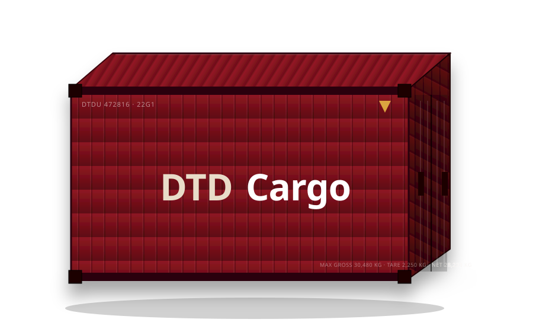

Las tres opciones lado a lado, en la paleta clara del hero. Mirá cuánto se aprecia el contenedor de marca detrás del bucle y decime con cuál te quedás.
El bucle es el mismo en las tres (cinta + contenedor viajando + 4 estaciones). Lo único que cambia es la intensidad del contenedor de marca de agua detrás. La animación corre en vivo; con “reduce movimiento” del sistema se ve el estado final.
